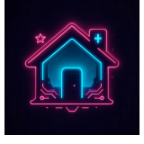

Past, Present, Future
It was rare for the kids I knew to have video games (in the '90's). But one friend always had the latest.
He introduced our circle of friends to Super Mario Bros. and the mind-blowing Game Boy. When a move severed connection to that group, I also lost the connection to video games.
Now, the how and why things work are far more interesting. For this reason, the V-Game blog is forward facing with excitement about what is on the horizon as we enter into the digital world of unlimited possibility.
Learn about Web3 in the Future section.